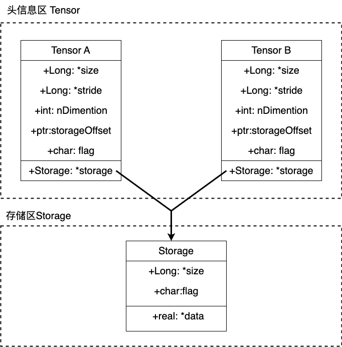
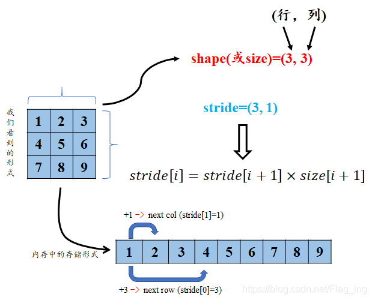
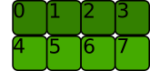
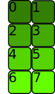
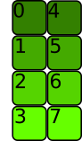
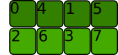

view与reshape的比较和分析
view()与reshape()的比较和分析
view和reshape似乎都可以基于已存在的张量,
生成一个数据相同而形状不同的新张量. 从效果上说, 似乎二者是等价的,
但是既然PyTorch选择将他们分做两个函数, 那么二者一定是有一定差异的,
并且可能在某些时候我们要根据实际情况和这些差异选择view或者reshape其中一个,
而不是看心情.
如果只关注于用法
如果我们只关注使用, 那么阅读官方文档就能够满足我们的需求.
view()
1 | Tensor.view(*shape) => Tensor |
返回一个和self的数据相同但是形状不同的新张量.
返回的张量与self共享数据, 并且必须有相同的元素数量.
对一个张量执行view()函数,
新视图必须与原始张量的size和stride兼容,
换句话说就是原始张量和新视图都必须满足contiguous(似乎可以被翻译为"连续性"),
或者说满足如下公式:
\[ stride[i] = stride[i+1] \times size[i+1] \]
否则,函数在此处就会抛出错误.
一个张量的
stride可以通过Tensor.stride()函数获取 一个张量的size可以通过Tensor.size()函数或者Tensor.shape属性获取
这里的
contiguous或者说"连续性"你可能并不理解, 这是一个涉及到数据底层存储逻辑的概念. 如果你只关注使用, 那么其实你不需要知道满足contiguous到底是什么意思, 可以简单的认为满足contiguous就是满足以上的公式; 如果你想进一步了解, 请参阅本文档的如果想深入了解部分
以上是对官方文档的摘抄和翻译.
需要注意的是, view函数返回的新张量又被叫做视图,
它可以被当作一个张量使用,
但是这个视图和原始张量是共享数据的(有点类似于C++中的引用), 这意味着:
- 二者共享一个内容空间, 能够节省内存空间
- 你对其中一方的修改, 在另一方上也会生效
此外要说的一点是,
在reshape()和view()的过程中,
不同形状的新张量(或者说视图)和原张量中的元素遵循如下关系:
按照行优先原则,
原张量的第k个元素和新张量的第k个元素对应.
我将这个关系称为行优先拉伸对应关系.
真是只是我本人的一个说法, 没有任何来源 这个关系很重要, 某种程度上决定了
view()和reshape()的差异, 之后在解释contiguous时也会用到
比如对于\(2\times 2\)规模的张量,
s[0][1]就是第二个元素(\(0\times 2 + 2\)),s[1][1]是第四个元素\(1 \times 2 + 2\)
view()带来了一个问题
根据view()函数的说明, 我们肯定会产生一个疑问:
如果我们手头有了一个不满足contiguous的张量,
而我们又希望根据它的数据得到一个不同形状的新张量, 我们应该怎么做呢?
一个符合直觉的思路是, 既然这个张量不满足contiguous,
那我们让它满足contiguous不就可以了吗?
是的, 这是一个标准的解法:
1 | # 如果x是一个不满足`contiguous`的张量 |
这里我们调用Tensor.contiguous()函数得到了一个和张量x具有相同数据且满足contiguous的张量y,
而后我们再在y的基础上通过view()函数成功得到了我们需要的新张量(或者说视图).
但是值得注意的是, 此处y是一个全新的张量,
它和x张量相互独立, 只是作为张量来说,
y和x拥有同样的形状,
并且对应位置上的元素是相等的.
而此时, 显然新视图z也会和x分割开来,
毕竟它现在是y的视图了,
以后对z和x的操作也不会相互影响了.
reshape()
以上方案已经解决了问题, 但是使用起来可能会有些繁琐:
我们要先判断一个张量是否满足contiguous,
然后根据结果选用view()或者reshape()函数.
为了方便我们使用,
PyTorch提供了一个内置了以上逻辑的函数reshape().
reshape()函数会在内部执行判断和函数选用,
最后返回给我们一个满足我们要求的新视图.
此处的说法是
新视图,毕竟在上面的分析中即使z和x已经分割开来, 但是毕竟z也是y的一个视图. 但是如果你了解python的垃圾回收机制(引用计数), 你就会明白我们虽然有时候说视图有时候说张量, 但是此二者本质是相同的, 即使你混用它们, 或者统统称呼为视图或者张量似乎都谈不上错. 不过在习惯中, 我们称呼视图时, 会包含数据共享这层含义.
显然的是,
reshape()函数比view()函数更具鲁棒性.
但是它也有自己的问题,
那就是你不能确定reshape()函数返回的新张量和self是否共享数据,
这在很多情况下会产生逻辑问题. 官方文档中也指出,
我们不应该在使用reshape()时把它的结果断言为self的视图或者一个独立的新张量,
即使在真实的运行环境中它确实和你的预期结果相同.
总结
- 如果你需要获取一个和原有张量共享内存的视图,
那么请使用
view()函数, 即使此时使用reshape()函数也可以获得同样的效果. - 如果你只想要获取一个指定形状, 且和原有张量有同样数据的新张量,
那么请使用
reshape()函数.
如果想深入了解
张量和视图底层是如何存储的?
不论是几维的张量, 它的数据在底层存储时,
都是按照一维数组的形式存储的(存储在存储区(Storage)中).
而张量的维度,
形状等信息与一维数组是分开存储的(存储在头信息区(Tensor)中).
如下图所示:

在上图的情况中, 张量A和张量B指向同一个存储区, 显然它们二者是共享存储区的, 此时一下几种说法都是可以说是正确的:
- B是A的视图
- A是B的视图
- A和B都是张量
- A和B都是视图
但是, 习惯上, 我们会称呼A和B中那个先被创建的为张量, 后创建的那个被称为前面那个张量的视图.
既然张量中的数据都是以一维的形式存储的,
那么要如何将一维的数据映射到高纬度的张量上呢?
答案就是stride(似乎可以翻译为步长)
stride
stride可以理解为从索引中的一个维度跨到下一个维度中间的跨度。此处挪用了第二个参考博客中的图片.

所以,
对一个现有张量(满足contiguous的张量)执行view()或者reshape()函数,
本质上是新建一个与原来张量指向同一个Storage的张量头,
并且根据指定的形状, 设置这个新张量头的stride.
了解了stride这个概念之后,
我们就可以来聊一聊contiguous了.
通过一个例子来解释contiguous
此处内容, 基本化用自第三个参考博客
首先, 创造一个张量(一个新张量都是满足contiguous的,
先不要问为什么):
1 | a = torch.arange(8).reshape(2, 4) |

这个张量在内存中的存储形式如下:
我们可以通过stride()函数获取一个张量张亮头中的stride
1 | a.stride() |
我们现在想要reshape或者view为一个\(4\times 2\)的张量:
1 | a.view(4,2) |

经过以上操作, 数据在底层的存储实际上没有任何改变,
并且仍然是满足contiguous的:
1 | a.view(4, 2).stride() |
让我们对a执行转置操作. 转置操作也不会改变数据的底层存储,
但是这是个典型的, 获取不满足contiguous的张量的情况:
1 | a.t().is_contiguous() |
Tensor.t()的返回值也是原张量的一个视图
此时在逻辑上, 这个张量应该长这样:

此时我们就得到了一个不满足contiguous的新张量(即使它还是另一个张量的视图).
此时我们再看一下这个新张量在底层的存储:
实际上, 底层存储始终没有改变过.
此时,
显然这个新的张量和底层存储的一维矩阵不满足之前提到的行优先拉伸对应关系,
这种情况, 我们就称其不满足contiguous.
此时如果我们继续在这个新张量的基础上继续执行view(),
就会产生不一致性, 比如我们执行如下操作:
1 | a.t().view(2, 4) |
我们实际是希望获取如下的新张量:

它对应到底层存储是这样的:
但是, 此时我们无法在不改变底层存储,
只修改stride的情况在完成这个操作,
因此PyTorch认为这种情况不满足contiguous,
不能执行view()函数.
再说两句
目前在我实际操作和查阅的资料中,
只碰到了一个会出现不满足contiguous的张量的情况,
那就是矩阵转置.
但是这又又又抛出了一个新问题,
矩阵转置似乎也无法通过仅仅修改stride就得到满足条件的新张量,
那我们得到的转置之后的视图的呢?
根据网上的博客,
似乎可以通过同时修改stride和size来达到效果,
但是目前还没有找到更清晰的说法.